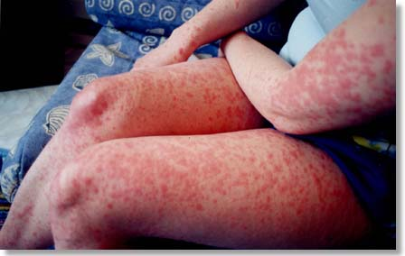
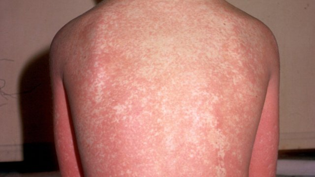
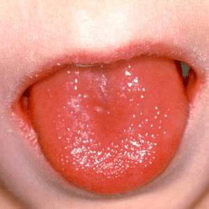
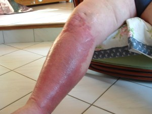

III. Clinique
Streptococcus pyogenes est responsable d'un grand nombre d'infections, que l'on peut classer en 3 grandes catégories :
- Les infections suppuratives non invasives
- Les infections suppuratives invasives
- Les complications post-infectieuses
1)Infections suppuratives non invasives
La forme habituelle des infections à Streptococcus pyogenes est l'angine, caractérisée par de la fièvre, une hypertrophie des amygdales (sensation de gonflement des amygdales qui provoque des douleurs, surtout à la déglutition) et une sensibilité des ganglions lymphatiques cervicaux. L'angine à Streptococcus pyogenes peut être érythémateuse (=angine rouge) ou érythémato-pultacée (amygdales recouvertes d’un enduit ou de points blanchâtres).
 |
 |
| angine érythémateuse | angine érythémato-pultacée |
La scarlatine est une complication éruptive de l’angine, touchant majoritairement les enfants de 5 à 10 ans, pendant l'hiver. Elle apparaît brutalement, dans les 24-48h post-angineuse, avec des plaques rouges, parsemées de points rouges plus intenses, qui rendent la peau rugueuse, granuleuse au toucher. Cette éruption débute dans les zones appelées "plis de flexion" (aisselles, plis du coude et de l’aine) et peut ensuite s’étendre à d’autres parties du corps (haut du thorax, bas de l'abdomen, visage, extrémités) sauf le pourtour de la bouche, les paumes des mains et les plantes des pieds. Ces éruptions évoluent vers une desquamation au bout de 7 à 10 jours.La langue prend un aspect caractéristique, avec des papilles plus développées qu’à l’état normal et une coloration rouge-framboise. La scarlatine provoque également une fièvre importante (39-40°C), des frissons, des douleurs pharyngées, des adénopathies et des vomissements. Elle se transmet par voie aérienne (toux, éternuements, postillons) ou encore par contact direct ou indirect (par l’intermédiaire d’objets récemment souillés par des sécrétions).
|  |  |  |
L’impétigo est une infection cutanée très contagieuse, provoquant des démangeaisons très importantes. Des lésions se forment sur une peau saine ou sur des lésions cutanées pré-existantes (piqûre d’insecte, eczéma, traumatisme, brûlure, varicelle) qui s'infectent par grattage (impétiginisation). Le plus souvent, l'impétigo apparait d'abord autour des orifices (narines, bouche, anus). En se grattant, l’enfant s’auto-inocule provoquant ainsi une propagation des lésions au cuir chevelu et au reste du corps. Des vésicules naissent et se transforment rapidement en pustules contenant un liquide trouble (pus). Ces pustules se rompent facilement et prennent un aspect croûteux. Les croûtes sont entourées d’un pourtour rouge, inflammatoire. Cependant, l’enfant ne présente pas de fièvre. Cette pathologie touche principalement les enfants en milieu défavorisé (manque d’hygiène) et peut être à l’origine d’épidémies dans des crèches ou en milieu scolaire, dû à sa sa grande contagiosité.
2)Les infections suppuratives invasives
Streptococcus pyogenes peut provoquer des infections cutanées invasives ou profondes, c’est-à-dire touchant l’hypoderme, appelées dermo-hypodermites :
| L’érysipèle est caractérisé par une fièvre brutale élevée (39-40°C), des frissons puis apparition d’une plaque rouge, inflammatoire, douloureuse à la palpation et oedémateuse. La plupart du temps, ces signes cutanés sont localisés au niveau des membres inférieurs, on parle d’un tableau clinique de « grosse jambe rouge et fébrile ». La porte d’entrée bactérienne dans ce cas peut être : un intertrigo (inflammation au niveau des plis cutanés, par exemple entre les orteils), un ulcère de la jambe ou un traumatisme. Cette maladie est favorisée par l’obésité, les lymphoedèmes (obturation d’une veine lymphatique) ou encore l’insuffisance veineuse. |  |
La fasciite nécrosante est une atteinte du fascia (tissu qui enveloppe les muscles et les organes), conduisant à une destruction des tissus, on parle de « bactéries mangeuses de chairs ». Lorsque l’infection s’étend aux tissus musculaires, on l’appelle myosite nécrosante. Cette maladie provoque de la fièvre, des douleurs aiguës et une enflure rouge et douloureuse qui s’étend rapidement (jusqu’à 3 cm chaque heure), ce qui peut nécessiter une amputation. La mort peut survenir en 12 à 24 heures. Cette infection est généralement due à la pénétration de bactéries à travers une brèche cutanée ou peut être due à une colonisation chronique par streptocoques pyogènes suite à une angine, par une bactériémie transitoire.
Streptococcus pyogenes peut également provoquer des septicémies et bactériémies et est responsable du Syndrome du Choc Toxique Streptococcique (SCTS), dû à une toxine super-antigénique : la toxine Ssa. Les patients développent rapidement une hypotension progressive et une défaillance de multiples organes (reins, foie, poumons). Cette infection est mortelle dans 90% des cas malgré la réanimation et les antibiotiques.
3)Les complications post-infectieuses
Des complications peuvent intervenir 1 à 4 semaines après une infection non traitée, même bénigne (angine). Elles sont dues à une parenté antigénique entre la bactérie et certains tissus humains : réaction immunitaire croisée.
- Rhumatisme articulaire aigu (RAA) : atteinte des articulations (arthrites), du coeur et des membranes séreuses, provoquant des complications cardiaques pouvant aller jusqu’à l’insuffisance cardiaque.
- Glomérulonéphrite aiguë (GNA) : atteinte du rein pouvant aller jusqu’à l’insuffisance rénale grave. Elle survient principalement chez les enfants de 5 à 12 ans, 10 à 20 jours après une infection streptococcique plus souvent cutanée que muqueuse.
- Chorée de Sydenham que l’on appelle aussi « danse de Saint Guy » : atteinte du système nerveux central se manifestant par des mouvements non coordonnés.
- Érythème noueux : complication cutanée avec des nodules sous-cutanés palpables.